Alcance de esta revisión
Se revisaron avisos de alquiler de naves, almacenes y locales industriales publicados en Urbania, Adondevivir, InfoCasas, Bienesonline y LaEncontre, el 13 de noviembre de 2026 (hora de Lima). Abajo va una muestra de nueve avisos, con Chorrillos primero. Los precios y características se tomaron de cada ficha; no se inventaron cifras.
Como referencia de presupuesto, una operación de metalmecánica busca de 3,000 a 3,500 m² en Chorrillos o alrededores, a USD 5,000 al mes. Ese dato sirve para leer la conclusión; no es un aviso de esta lista.
Avisos revisados
-
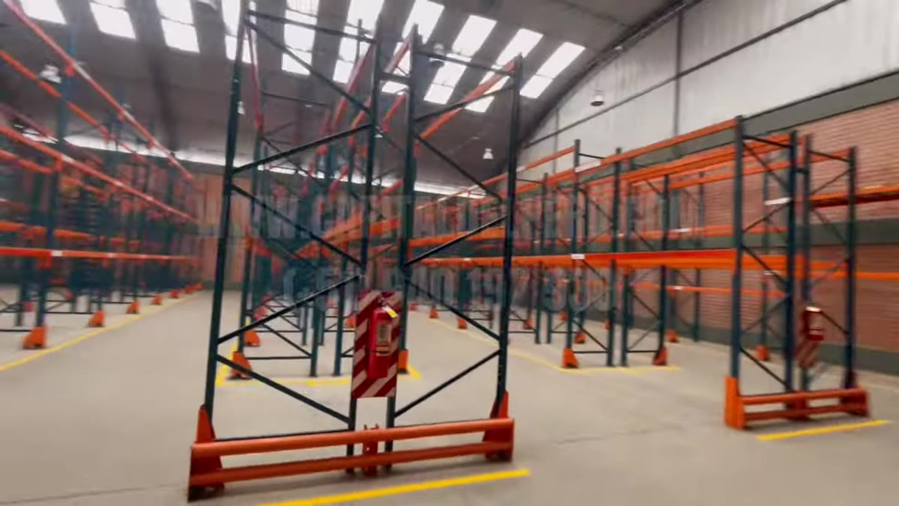
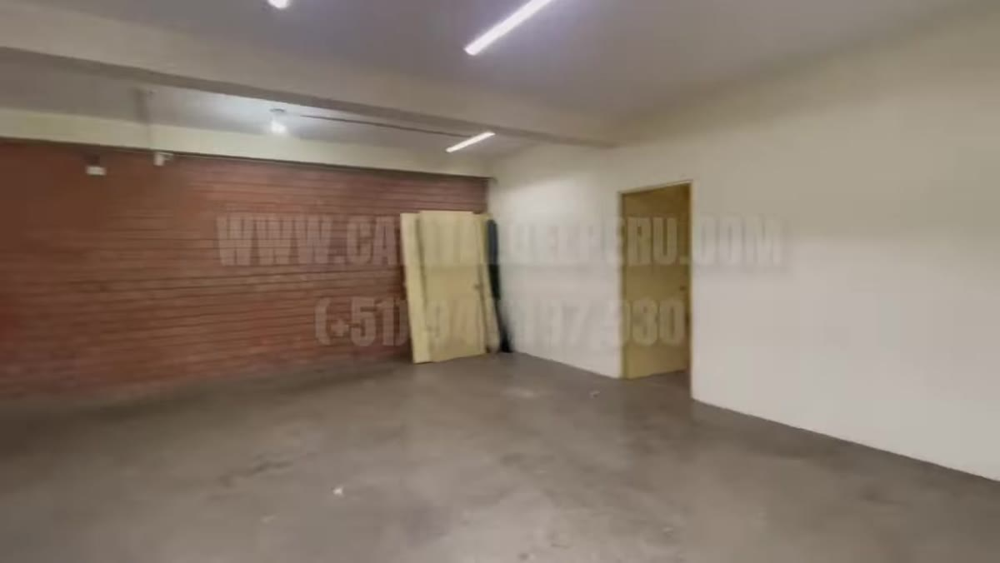
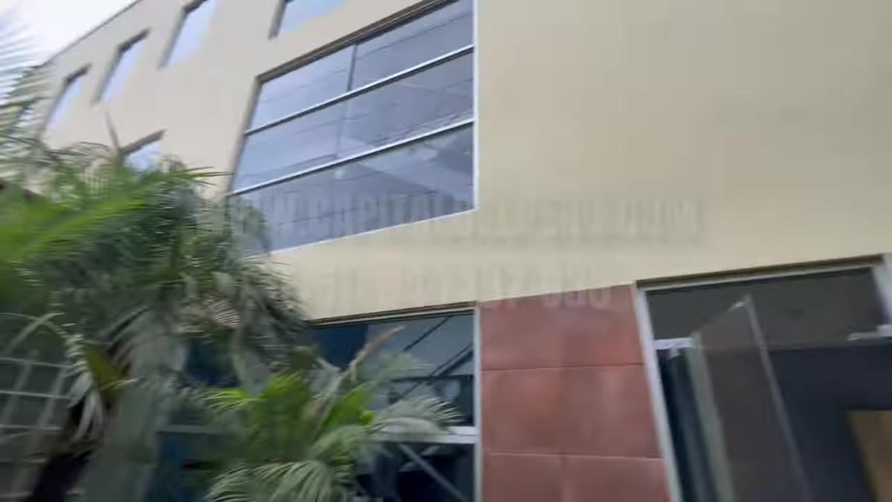
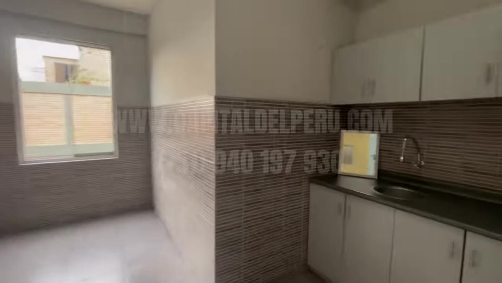
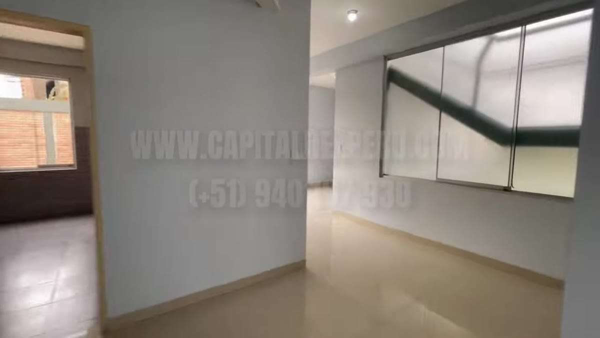
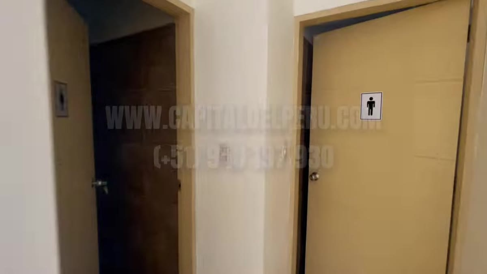
1 / 6 -


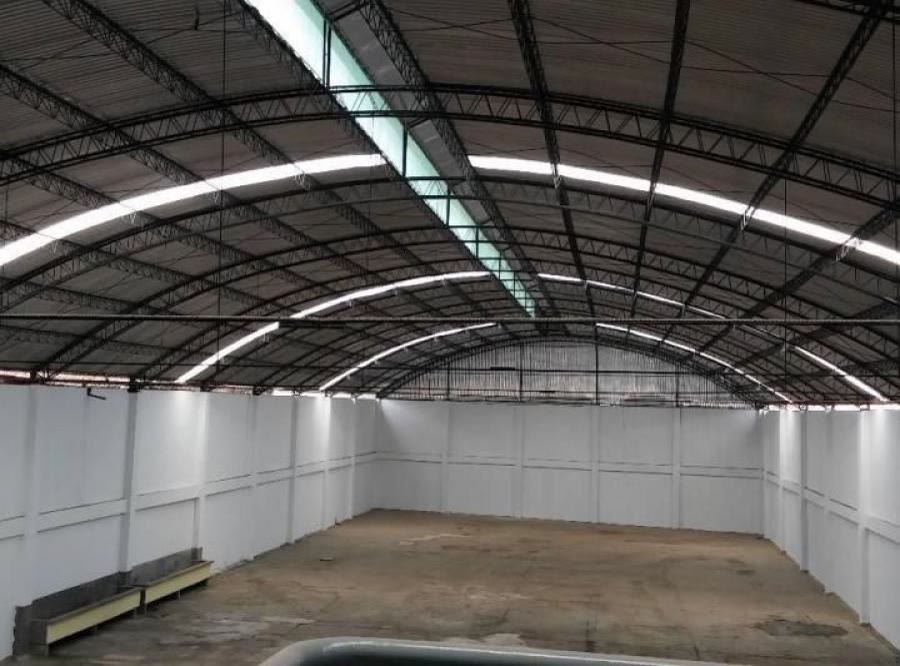

 1 / 5
1 / 5 -
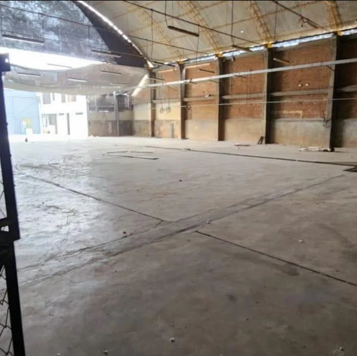

 1 / 3
1 / 3 -


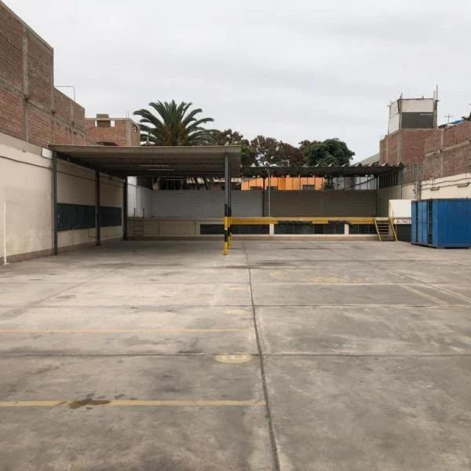
1 / 3 -
Sin fotos disponibles
-


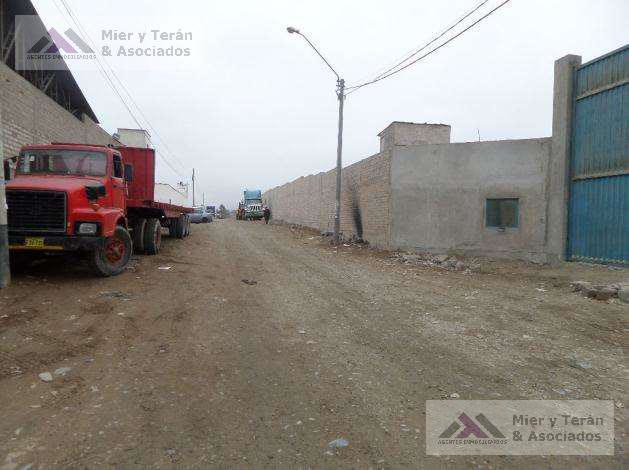

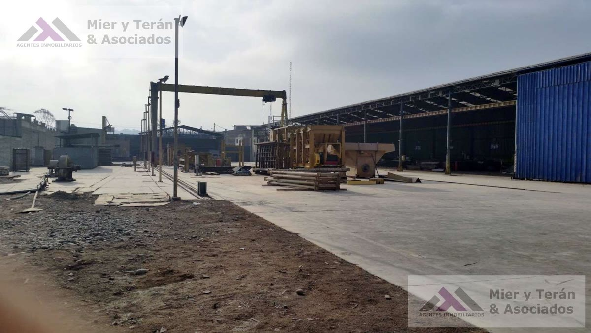
 1 / 6
1 / 6 -


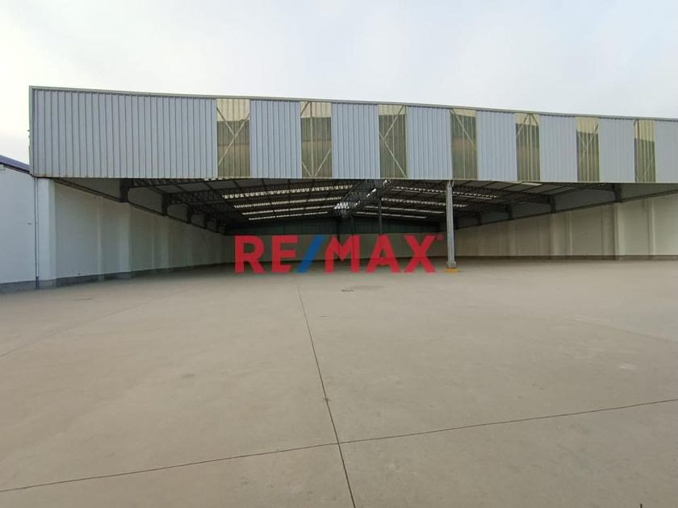
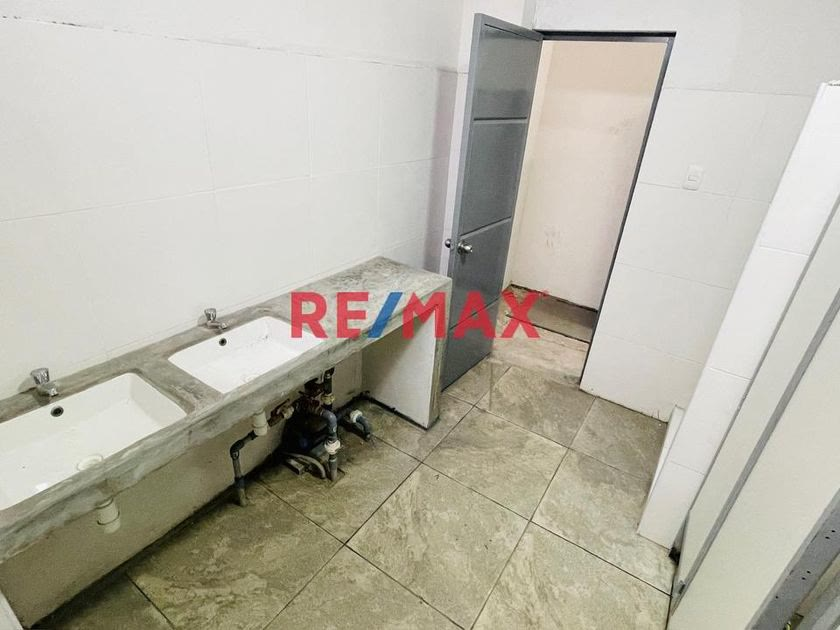
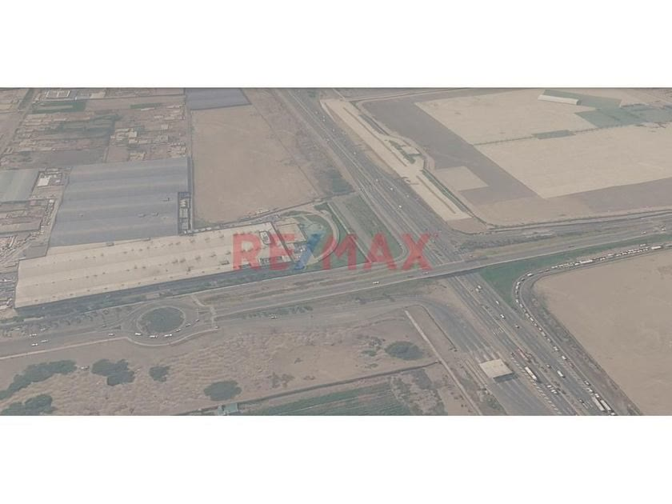
1 / 6 -
Sin fotos disponibles
-
Sin fotos disponibles
Conclusión técnica
En Chorrillos, la oferta activa de naves y locales industriales se concentra en unidades de 500 a 1,600 m². En esa franja, los avisos revisados el 13 de noviembre de 2026 se mueven, en términos gruesos, entre unos USD 3,500 y USD 12,500 al mes, o su equivalente en soles. En la muestra quedan, por ejemplo, el almacén de 1,004 m² en Villa Marina a S/ 14,364, el local de 1,300 m² a S/ 22,500, la nave de 1,572 m² cerca de Prolongación Huaylas a USD 5/m² + IGV (USD 7,860 + IGV al mes) y el centro logístico de 1,400 m² en La Campiña a USD 10,500.
Las unidades de 3,000 m² o más son escasas en Chorrillos. La opción más clara en ese rango es el almacén de 3,300 m² en Av. Defensores del Morro 4263, a USD 24,750 + IGV (USD 7.50/m² + IGV, con mantenimiento incluido). Ese canon está muy por encima de un presupuesto de USD 5,000 mensuales para 3,000 a 3,500 m².
Como referencia de mercado, JLL, en su reporte Lima – Industrial Stand Alone (indicadores del 1T 2025), sitúa la renta promedio de locales en USD 6.50/m²/mes en Chorrillos, USD 5.00 en Lurín y USD 4.10 en Villa El Salvador. En las prácticas típicas del mismo informe, el IGV del arrendamiento (18 %) va a cargo del inquilino. A esos promedios, una necesidad de 3,000 m² equivaldría, solo de renta, a unos USD 19,500 + IGV en Chorrillos o USD 15,000 + IGV en Lurín, antes de mantenimiento u otros cargos.
El metraje grande aparece con más frecuencia en Lurín y, en menor medida, en Villa El Salvador. En San Pedro, Lurín, hay un local de 3,700 m² a USD 17,500 (unos USD 4.73/m²). En Praderas de Lurín, un predio de 4,786 m² —nave de 2,273 m², patios amplios, estructura para puente grúa y 11 m de altura— se pide a USD 5.50/m² + IGV, es decir USD 26,324 + IGV al mes. En Villa El Salvador, el taller de 1,542 m² ya viene con tres puentes grúa de 2 t y un pórtico de 10 t, a USD 12,500: el área es menor, pero es el inmueble más operativamente cercano a un taller de metalmecánica.
La implicación es directa: un requerimiento de 3,000 a 3,500 m² a USD 5,000 al mes queda por debajo del mercado, tanto de los promedios JLL como de los avisos vigentes. Si el presupuesto no se ajusta, las alternativas reales tienden a ser una unidad más chica en Chorrillos, o buscar el metraje en Lurín o Villa El Salvador, donde el USD/m² suele ser menor, aunque el canon total de las naves de 3,000 m² o más que se revisaron sigue siendo superior a USD 5,000.
Esta nota es una lectura de avisos públicos y de un reporte de mercado, no una tasación ni una confirmación de disponibilidad. Los precios pueden cambiar y, en varios casos, se les suma IGV u otros cargos.